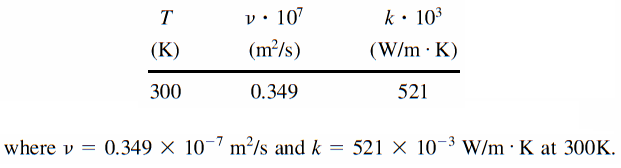
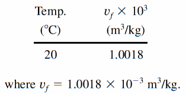
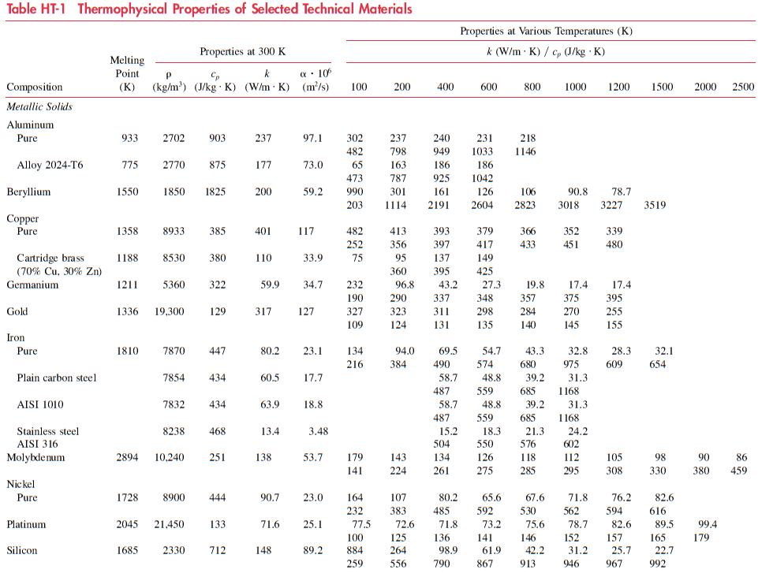
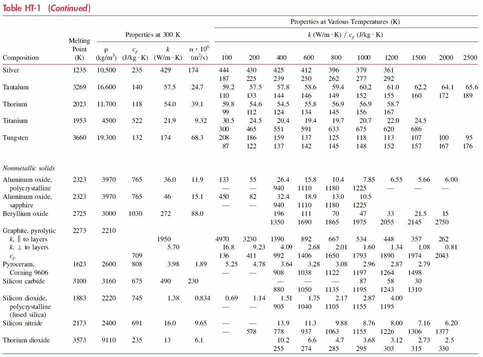
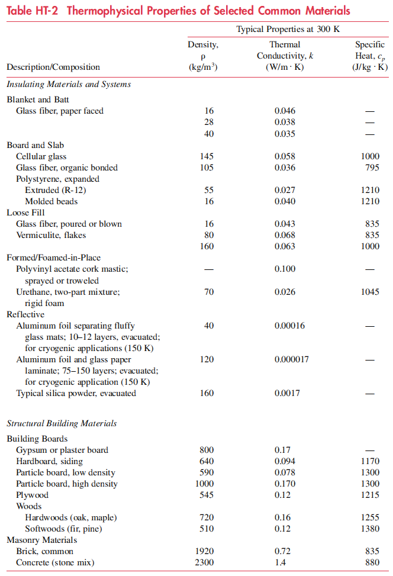
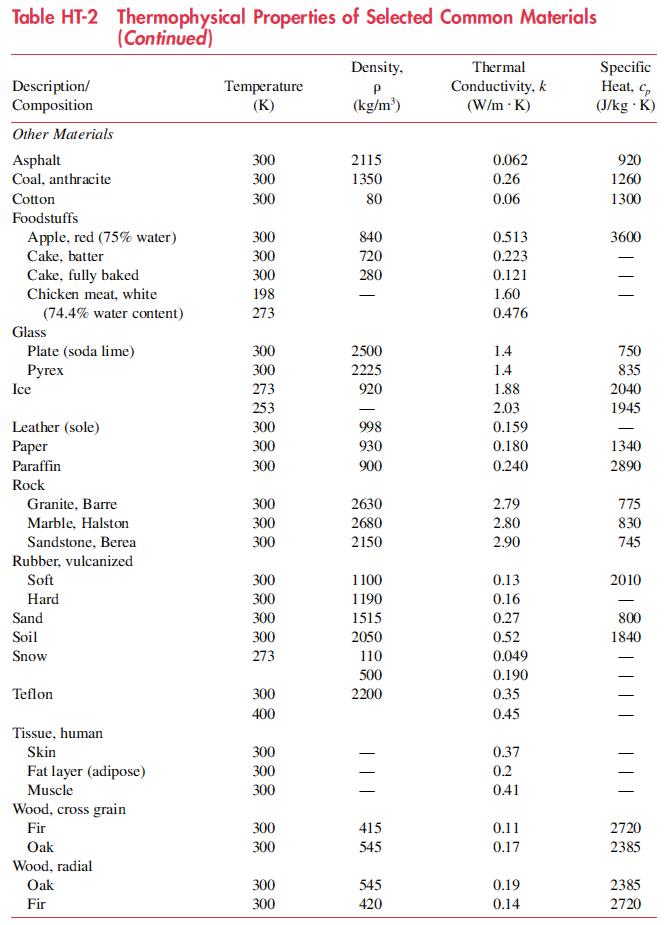
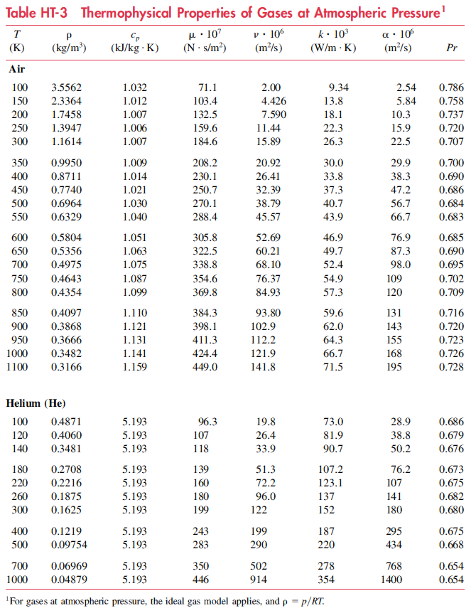
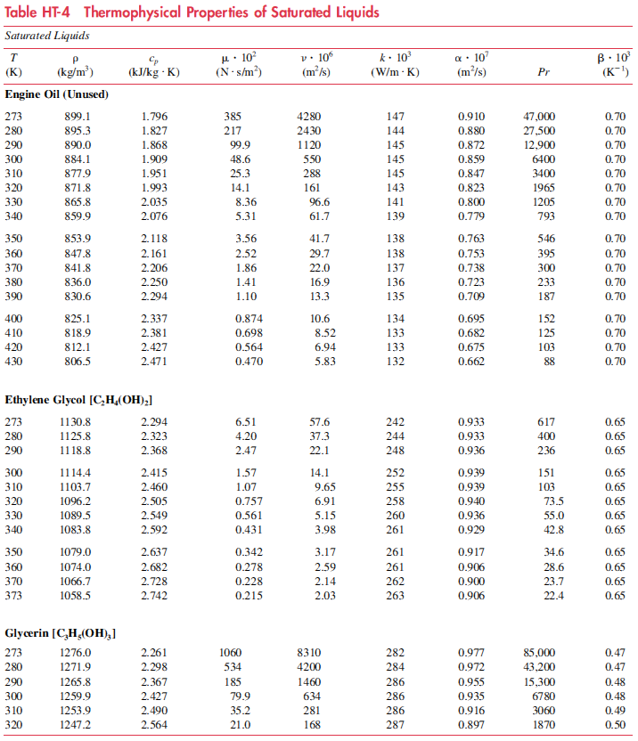
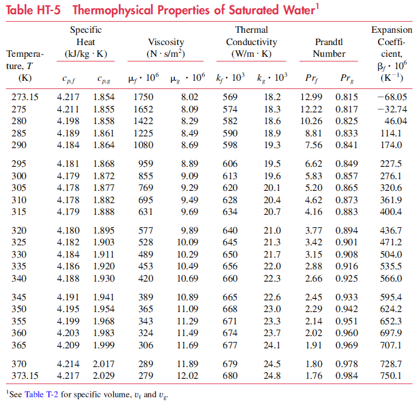
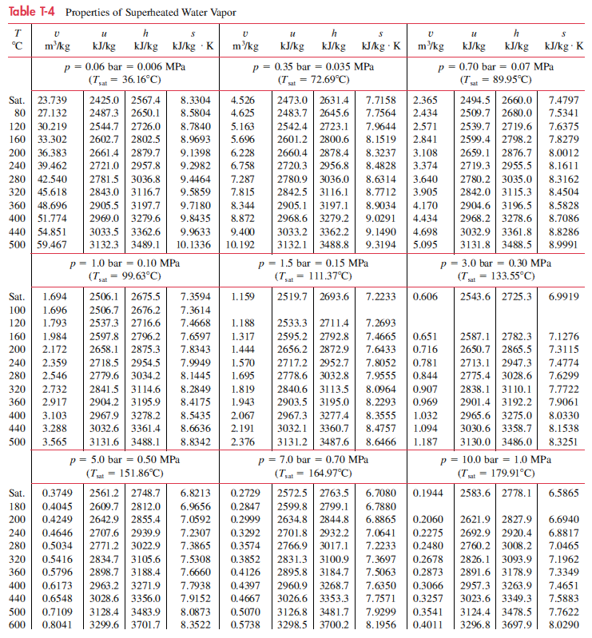

ENGI-3440 - Files and Utilities Repository
Maintained by: Prof. Ricardo Bravo - ricbrav@gmail.com
Property Tables for Heat Transfer*
The convention used to present numerical values in heat transfer property tables is illustrated by this example:

Property Tables for Thermodynamics*
The convention used to present numerical values of specific volume of liquids in the international system (SI) tables for thermodynamics is illustrated by this example:

*Source of this content:
Moran M, Shapiro H, Munson B, DeWitt D (2003) Introduction to Thermal Systems Engineering:Thermodynamics, Fluid Mechanics, and Heat Transfer. 1st ed. John Wiley & Sons, Inc.
Tables:
Property Tables for Heat Transfer:
Table HT-1 Thermophysical Properties of Selected Technical Materials - Go to heat transfer tables / Go to top


Table HT-2 Thermophysical Properties of Selected Common Materials - Go to heat transfer tables / Go to top


Table HT-3 Thermophysical Properties of Gases at Atmospheric Pressure - Go to heat transfer tables / Go to top

Table HT-4 Thermophysical Properties of Saturated Liquids - Go to heat transfer tables / Go to top

Table HT-5 Thermophysical Properties of Saturated Water - Go to heat transfer tables / Go to top

Property Tables for Thermodynamics:
Table T-1 - Atomic or Molecular Weights and Critical Properties of Selected Elements and Compounds
International System / English System - Go to thermodynamics tables / Go to top
Table T-2 - Properties of Saturated Water (Liquid-Vapor): Temperature Table
International System - Go to thermodynamics tables / Go to top
English System - Go to thermodynamics tables / Go to top
Table T-3 - Properties of Saturated Water (Liquid-Vapor): Pressure
International System - Go to thermodynamics tables / Go to top
English System - Go to thermodynamics tables / Go to top
Table T-4 - Properties of Superheated Water Vapor
International System - Go to thermodynamics tables / Go to top

English System - Go to thermodynamics tables / Go to top
Table T-5 Properties of Compressed Liquid Water
International System - Go to thermodynamics tables / Go to top
English System - Go to thermodynamics tables / Go to top
Table T-6 Properties of Saturated Refrigerant 134a (Liquid-Vapor): Temperature Table
International System - Go to thermodynamics tables / Go to top
English System - Go to thermodynamics tables / Go to top
Table T-7 Properties of Saturated Refrigerant 134a (Liquid-Vapor): Pressure Table
International System - Go to thermodynamics tables / Go to top
English System - Go to thermodynamics tables / Go to top
Table T-8 Properties of Superheated Refrigerant 134a Vapor
International System - Go to thermodynamics tables / Go to top
English System - Go to thermodynamics tables / Go to top
Table T-9 Ideal Gas Properties of Air
International System - Go to thermodynamics tables / Go to top
English System - Go to thermodynamics tables / Go to top
Table T-10 Ideal Gas Specific Heats of Some Common Gases
International System - Go to thermodynamics tables / Go to top
English System - Go to thermodynamics tables / Go to top
Table T-11 Ideal Gas Properties of Selected Gases
International System - Go to thermodynamics tables / Go to top
English System - Go to thermodynamics tables / Go to top